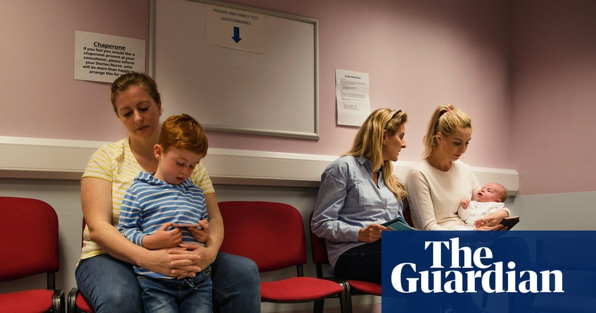

В докладе говорится, что здоровье детей в Англии подвергается риску из-за резкого увеличения времени ожидания NHS
Исследования CQC показывают, что длительные задержки затрудняют лечение и подчеркивают региональные различия в уходе.
Тысячи детей в Англии переживают одни из самых резких увеличений времени ожидания медицинской помощи в истории NHS, говорится в отчете.
Хотя время ожидания некоторых взрослых улучшилось, дети и молодые люди «сильнее всего пострадали» на фоне растущего спроса и падения численности персонала, согласно ежегодному состоянию c